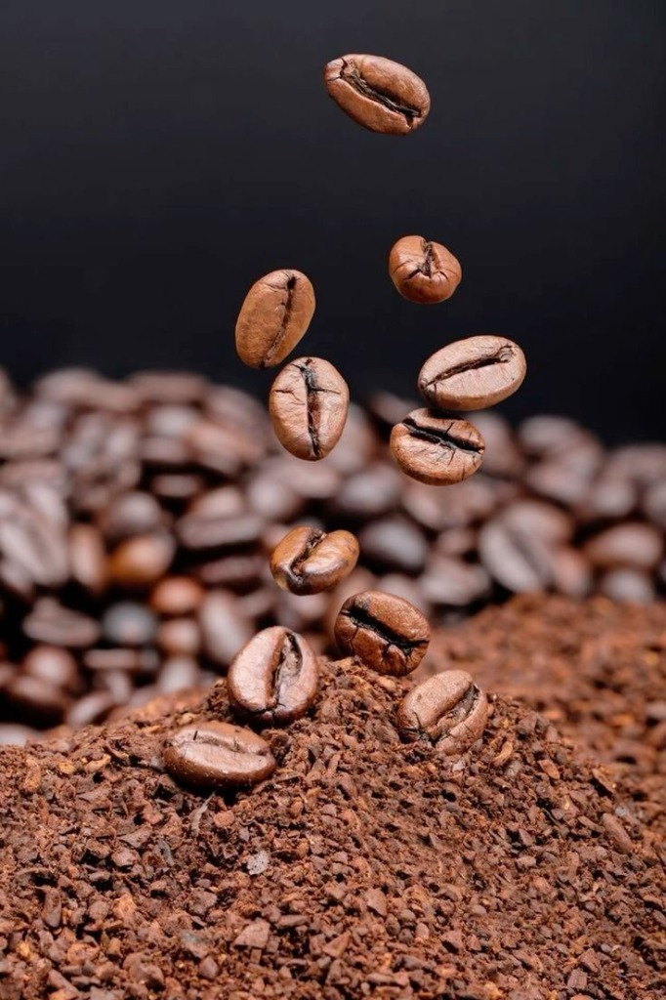

CHƯƠNG 01 / 04
Ý tưởng từ ly cà phê thường nhật
Hành trình bắt đầu từ những buổi sáng bên tách cà phê đậm đà. Nhận thấy lượng bã cà phê khổng lồ bị loại bỏ mỗi ngày sau khi pha chế, đội ngũ sáng lập DOVA tự hỏi: Tại sao không khai thác kết cấu sợi tự nhiên của bã cà phê để tạo nên một chất liệu mới mẻ, mang hơi thở ấm áp của đất trời vào những vật dụng cầm tay hàng ngày?
Một chiếc ví không chỉ là vật chứa tiền bạc hay thẻ từ, mà còn là người bạn đồng hành thân cận nhất, phản ánh ý thức tiêu dùng và gu thẩm mỹ của người sở hữu.